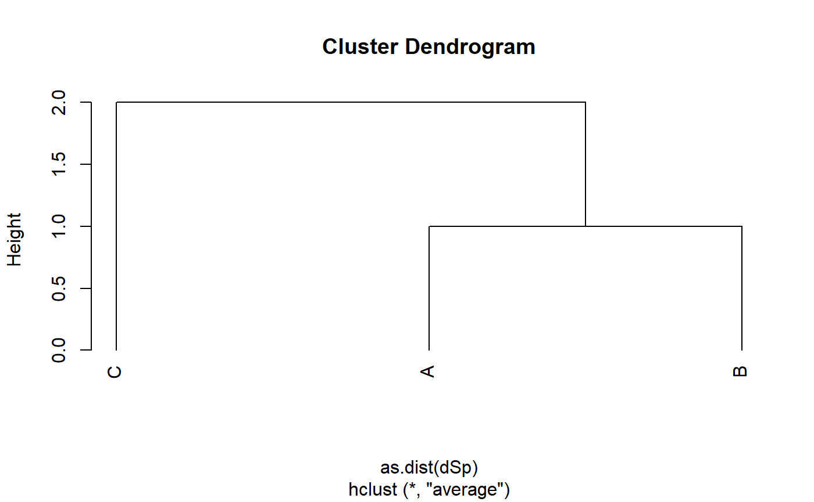
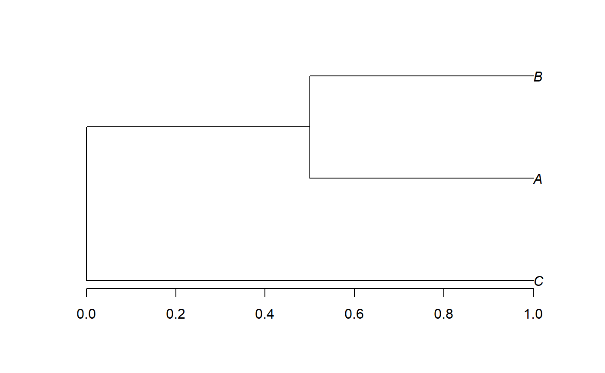
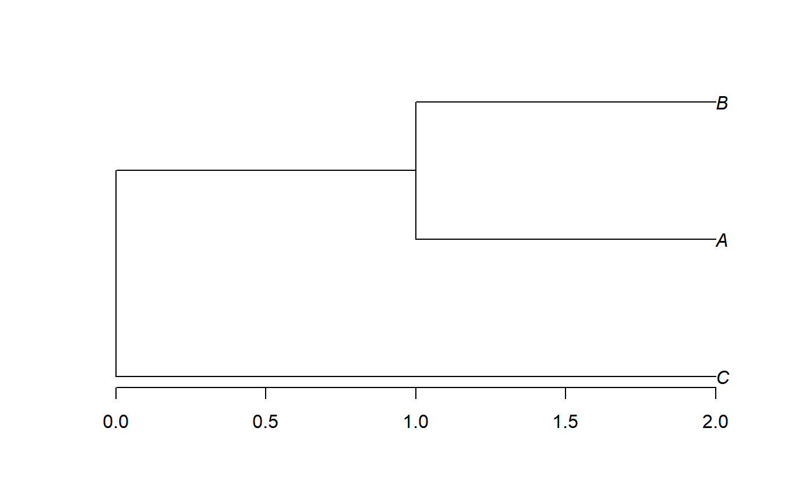
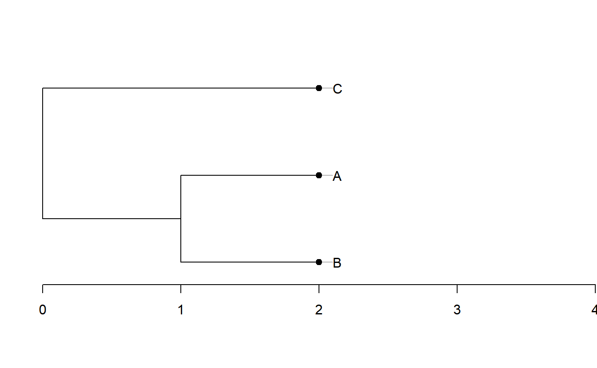

entropart is a package for R designed to estimate diversity based on HCDT entropy or similarity-based entropy.
Several object classes can be used in entropart to represent phylogenies and calculate phylogenetic diversity. They are detailed here.
Supported phylogenies are classes phylo from package ape, phylog from package ade4 and hclust from package base.
To optimize performance, a specific class PPtree, for “preprocessed trees”, is introduced by the package: it is basically a list containing a phylo and an hclust representation of the phylogeny and preprocessed useful statistics.
The arguments Tree or PhyloTree used in phylogenetic diversity estimation functions of the package may be any of those formats.
Let’s start from an ultrametric distance matrix. Three species are defined, with distance 1 between the first 2 and distance 2 between both and the last one.
dSp <- matrix(c(0, 1, 2, 1, 0, 2, 2, 2, 0), nrow=3, byrow=TRUE)
row.names(dSp) <- colnames(dSp) <- c("A", "B", "C")
dSp## A B C
## A 0 1 2
## B 1 0 2
## C 2 2 0An hclust object is created by UPGMA hierarchical clustering.
require("stats")
plot(hTree <- hclust(as.dist(dSp), method="average"), hang=-0.01, axes = F)
axis(2)
Node heights are stored in $height.
hTree$height## [1] 1 2Conversion to a phylo object is straightforward.
require("ape")## Le chargement a nécessité le package : ape
Edge lengths have been divided by 2 during the conversion, as documented in ?as.phylo.hclust.
phyloTree$edge.length## [1] 1.0 0.5 0.5 0.5That does not suit our needs. In entropart, edge lengths are multiplied by 2 after conversion, so that phyloobjects can be identical to other phylogenies.

The last conversion is from phylo to phylog.
require("ade4")## Le chargement a nécessité le package : ade4plot(phylogTree <- hclust2phylog(hTree))
axis(1)
Edge lengths are not stored directly in phylog objects. The $droot component keeps distances from tips to root. The $Wdist component is a dist (half a distance matrix without the zero-diagonal) whose values are \(d_{s,t}=\sqrt{2 \delta_{s,t}^2}\), where \(\delta_{s,t}\) is the distance between species \(s\) ant \(t\).
phylogTree$droot## C A B Int1 Root
## 2 2 2 1 0phylogTree$Wdist^2/2## C A
## A 2
## B 2 1